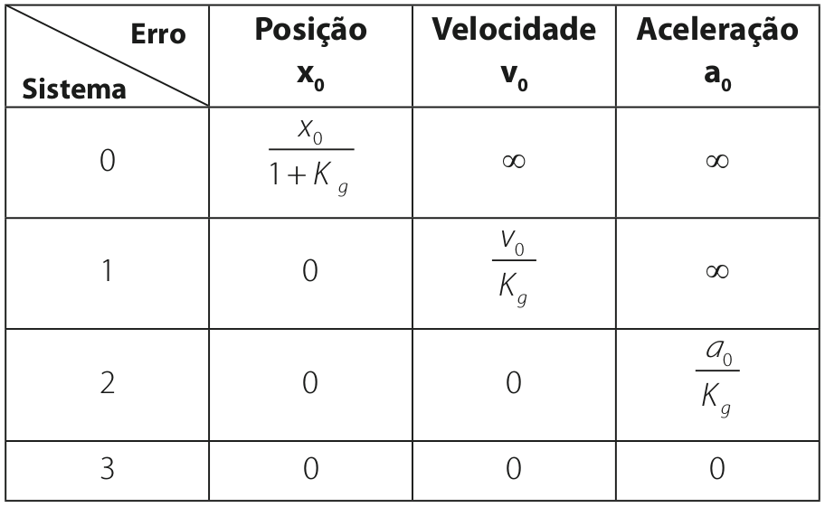

Erros estacionários

\(Y(s) = H(s) \, Z(s)\) (1)
\(Z(s) = G(s) \, E(s)\) (2)
utilizando (1): \(E(s) = R(s) - Y(s) \rightarrow E(s) = R(s) - H(s) \, Z(s)\)
utilizando (2): \(E(s) = R(s) - H(s) \, Z(s) \rightarrow E(s) = R(s) - G(s) \, H(s) \, E(s)\)
\(E(s) \left(1 + G(s) \, H(s) \right) = R(s) \rightarrow E(s) = \frac{R(s)}{\left(1 + G(s) \, H(s) \right)}\)
utilizando (2): \(E(s) = \frac{R(s)}{\left(1 + G(s) \, H(s) \right)} \rightarrow \frac{Z(s)}{G(s)} = \frac{R(s)}{\left(1 + G(s) \, H(s) \right)}\)

\( T(s) = \frac{Z(s)}{R(s)} = \frac{G(s)}{\left(1 + G(s) \, H(s) \right)} \)
Tipo do sistema
\(A(s) = G(s) H(s) = \frac{K_g (\lambda_1 s + 1)(\lambda_2 s + 1) ...}{s^N(\tau_1 s + 1)(\tau_2 s + 1) ...}\)
\(N\) = número de pólos de \(A(s)\) na origem
\(N\) = tipo do sistema
\(A_1(s) = \frac{s + 1}{s + 2}\) \(\rightarrow\) Tipo 0
\(A_2(s) = \frac{s + 1}{s \left(s + 2 \right)}\) \(\rightarrow\) Tipo 1
\(A_3(s) = \frac{s + 1}{s^2 \left(s + 2 \right)}\) \(\rightarrow\) Tipo 2
Sinais típicos

Efeito do integrador - Posição
O integrador \(\frac{1}{s}\) consegue eliminar
o erro estacionário de posição quando:
Tipo 0 \(\rightarrow\) Tipo 1.
Efeito do integrador - Velocidade

O integrador \(\frac{1}{s}\) consegue eliminar
o erro estacionário de velocidade quando:
Tipo 1 \(\rightarrow\) Tipo 2.
Efeito do integrador - Aceleração
O integrador \(\frac{1}{s}\) não consegue
eliminar o erro estacionário de aceleração quando:
Tipo 1 \(\rightarrow\) Tipo 2.
Efeito do integrador
Efeito do ganho

O aumento do ganho \(K_g\) diminui o erro estacionário.
Tabela de erros
Utilizando um sistema de primeira ordem, mostre que o erro estacionário dos sistemas do tipo 0 para uma entrada degrau \(\frac{A}{s}\) é igual a
\(e_{ss} = \frac{A}{1 + K_g}\)
Determine o erro estacionário dos seguintes sistemas para as entradas:
\(1/s\), \(1/s^2\) e \(1/s^3\)